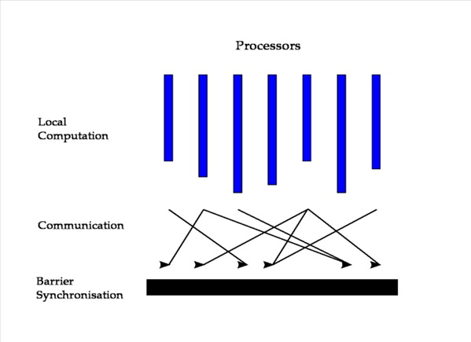

Bulk Synchronous Parallel Model
The Pregel model is inspired from the Bulk Synchronous Parallel model. The Bulk Synchronous Parallel (BSP) abstract computer is a bridging model for designing
parallel algorithms. A BSP computer consists of:
- components capable of processing and/or local memory transactions (i.e., processors),
- a network that routes messages between pairs of such components,
- a hardware facility that allows for the synchronization of all or a subset of components.
This is commonly interpreted as a set of processors which may follow different threads of computation, with each processor equipped with fast local memory and interconnected
by a communication network. A BSP algorithm relies heavily on the third feature; a computation proceeds in a series of global supersteps, which consists of three components:
- Concurrent computation: every participating processor may perform local computations, i.e., each process can only make use of values stored in the local fast
memory of the processor. The computations occur asynchronously of all the others but may overlap with communication.
- Communication: The processes exchange data between themselves to facilitate remote data storage capabilities.
- Barrier synchronization: When a process reaches this point (the barrier), it waits until all other processes have reached the same barrier.
